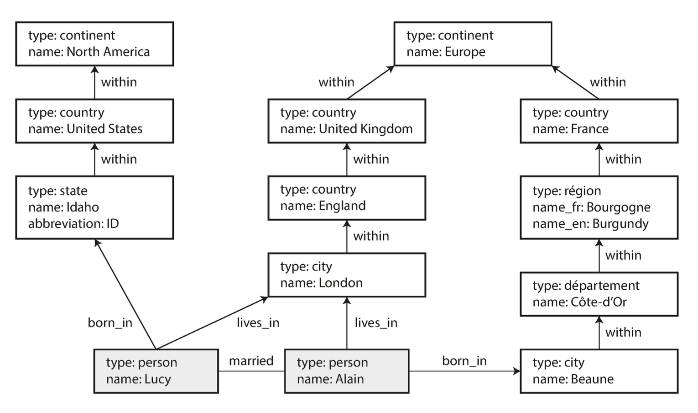
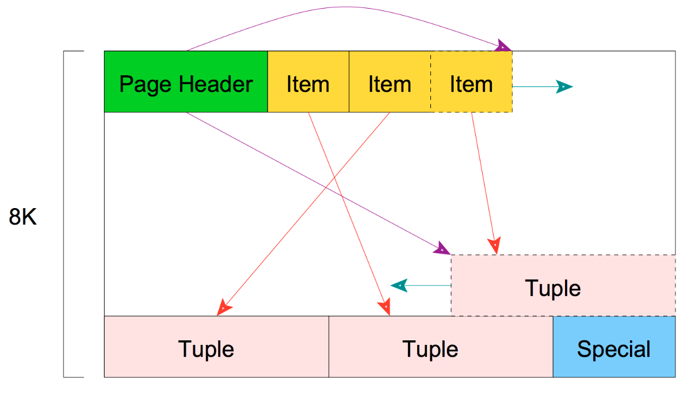

Databases: History, Models and Queries
Lviv University
Query languages
Query languages
SQL History
- Developed in 1974. Originally named SEQUEL, for Structured English QUEry Language. Changed to SQL due to trademark issues.
- In 1977 System R sells SQL to its first customer: Pratt & Whitney (aerospace)
- Software Development Laboratories (1977) -> Relational Software (1979) -> Oracle (1982)
- 1986: POSTGRES project at the University of California at Berkeley
Query languages
DBMS ranking, June 2024

Query languages: SQL
SQL Features
- Declarative (IMS and CODASYL where imperative)
- Set-based
- Functional
Pros of declarative approach
- more concise. Describe the pattern of desired data, not the sequence of steps required to get it
- leaves room for automatic optimizations (e.g. query optimizer)
- lends itself better for parallel execution
Query languages: SQL
SQL
Clauses
- The FROM clause selects from which tables to read the data, in this case two tables,
captainsandships.Implicitly the Cartesian product is computed. - The WHERE clause performs a selection: it only keeps the records for which the captain (from the
captainstable) is the captain of the ship (from theshipstable). If you pay attention, you will recognize that this filter together with the Cartesian product is actually a theta join. Any reasonable SQL implementation will be smart enough to detect this and evaluate this query efficiently (joins can be computed in linear time rather than quadratic!). - The SELECT clause is also where projections are made: it lists the columns to include in the results. Renames are also made in this clause with AS.
SQL
Clauses
- The GROUP BY clause performs an aggregation, with century as a grouping key. Aggregations on the captain name (COUNT) and the ship id (SUM) are done in the SELECT clause.
- The HAVING clause is in fact like the WHERE clause, but performs a selection after, rather than before, the grouping.
- The ORDER BY clause reorders the output rows according to the specified keys.
- The LIMIT and OFFSET clauses allow pagination of the output: OFFSET specifies how many records to skip, and LIMIT specifies how many records to output after the skipped ones.
- All clauses are optional except for SELECT and FROM.
Query languages: SQL
Query languages: SQL
Postgres example

Query languages: SQL
Query languages: SQL
Postgres example

Query languages: SQL
Postgres example
Query languages: SQL
Query languages: MongoDB API
Map-reduce example
db.observations.mapReduce(
function map() {
var year = this.observationTimestamp.getFullYear();
var month = this.observationTimestamp.getMonth() + 1;
emit(year + "-" + month, this.numAnimals);
},
function reduce(key, values) {
return Array.sum(values);
},
{
query: { family: "Sharks" },
out: "monthlySharkReport"
}
);Query languages: MongoDB API
Query languages: Cypher
Cypher query: create
Query languages: Cypher
Query languages: Cypher
Cypher vs SQL: find
WITH RECURSIVE
-- in_usa is the set of vertex IDs of all locations within the United States
in_usa(vertex_id) AS (
SELECT vertex_id FROM vertices WHERE properties->>'name' = 'United States'
UNION
SELECT edges.tail_vertex FROM edges
JOIN in_usa ON edges.head_vertex = in_usa.vertex_id
WHERE edges.label = 'within'
),
-- in_europe is the set of vertex IDs of all locations within Europe
in_europe(vertex_id) AS (
SELECT vertex_id FROM vertices WHERE properties->>'name' = 'Europe'
UNION
SELECT edges.tail_vertex FROM edges
JOIN in_europe ON edges.head_vertex = in_europe.vertex_id
WHERE edges.label = 'within'
),
-- born_in_usa is the set of vertex IDs of all people born in the US
born_in_usa(vertex_id) AS (
SELECT edges.tail_vertex FROM edges
JOIN in_usa ON edges.head_vertex = in_usa.vertex_id
WHERE edges.label = 'born_in'
),
-- lives_in_europe is the set of vertex IDs of all people living in Europe
lives_in_europe(vertex_id) AS (
SELECT edges.tail_vertex FROM edges
JOIN in_europe ON edges.head_vertex = in_europe.vertex_id
WHERE edges.label = 'lives_in'
)
SELECT vertices.properties->>'name'
FROM vertices
-- join to find those people who were both born in the US *and* live in Europe
JOIN born_in_usa ON vertices.vertex_id = born_in_usa.vertex_id
JOIN lives_in_europe ON vertices.vertex_id = lives_in_europe.vertex_id;Query languages: SPARQL
Query languages: Datalog
Datalog
Uses a generalized version of triple-store model: predicate(subject, object)
Query languages: Datalog
Definition
A Datalog program is a collection of Datalog rules, each of which is of the form: \[ A :- B_1,B_2,\ldots,B_n, \] where \(n \geq 0\), A is the head of the rule, and the conjunction of \(B_1,\ldots,B_n\) is the body of the rule.
The rule can be read informally as “\(B_1\) and \(B_2\) and \(\ldots\) and \(B_n\) implies \(A\)”.
Query languages: Datalog
Query languages: Datalog
Query languages: Datalog
Datalog query
within_recursive(Location, Name) :- name(Location, Name). /* Rule 1 */
within_recursive(Location, Name) :- within(Location, Via), within_recursive(Via, Name). /* Rule 2 */
migrated(Name, BornIn, LivingIn) :- name(Person, Name), /* Rule 3 */
born_in(Person, BornLoc),
within_recursive(BornLoc, BornIn),
lives_in(Person, LivingLoc),
within_recursive(LivingLoc, LivingIn).
?- migrated(Who, 'United States', 'Europe').Query languages: Datalog
Datalog: determine if Idaho is in NA
Storage engines
Storage engines
User view
- data model - how to store the data
- query lang - how to query the data
DB view
- storage engine internals - how to store the data
- storage engine/DB API - how to find the data
Storage engines
Storage engine optimizations
- for transactional workloads
- for analytics
Storage engines
Two families of storage engines
- log-structured
- page-oriented
Storage engines: logs
Log definition
An append-only sequence of records.
Still need to think about
- concurrency control
- disk space
- and handling errors and partial writes
Storage engines: logs
Storage engines: logs
Storage engines: logs
Pros and cons
- Pros: writes are fast \(O(1)\)
- Cons: reads are slow \(O(n)\)
How to speed up writes: use an index.
Index
Index is an additional structure that is derived from the primary data.
- any kind of index slows down writes
- necessary to choose manually based on typical query patterns.
Storage engines: logs
Index structure
Consider key-value data type (akin to Python dictionary).
Storage engines: logs
Limitations
- all keys should fit into available memory
- what if db file becomes too large?
Solution: Segmentation and Compaction
- break the log into segments
- write only to the newest segment
- perform compaction on older segments
Storage engines: logs
Solution: Compaction
Storage engines: logs
Solution: Compaction

Storage engines: logs
Compaction querying
- separate hash table for each segment
- first check the most recent segment
- if not found, check the second-most-recent segment
- merging process will make sure there’s not too many segments
Storage engines: logs
Compaction caveats
- deletions: use a tombstone record
- crash recovery: store hash tables in disk files for faster recovery
- log corruption: use checksums
- concurrency: single writer, multiple readers
Storage engines: logs
Append vs in-place: Pros
- appending and segmenting are sequential writes
- concurrency and crash recovery become much simpler
- segment merge does away with fragmentation
Append vs in-place: Cons
- hash table size limitations
- range queries become slow
Solutions: SSTable and LSM-tree, B-tree
Storage engines: logs
Definition
Sorted string table (SSTable): sort key-value entries by key.
Advantages:
- Merge is faster
- No need to keep hashes for all entries
- Records can be grouped into blocks and compressed
Introduced in Bigtable: A Distributed Storage System for Structured Data, Google (2006).
Storage engines: logs
SSTable advantages: merge is faster
Storage engines: logs
SSTable advantages: index optimizations
Storage engines: logs
How to sort data on disk?
- When a write comes in, add it to an in-memory balanced tree data structure (a memtable)
- When the memtable gets bigger than some threshold—typically a few megabytes —write it out to disk as an SSTable file.
- In order to serve a read request, first try to find the key in the memtable, then in the most recent on-disk segment, then in the next-older segment, etc.
- From time to time, run a merging and compaction process in the background
Storage engines: logs
SSTable uses
- LevelDB
- RocksDB
- Cassandra
- HBase
- Google BigTable users: Google Earth, Google Finance
Storage engines: logs
Log-Structured Merge-Tree
LSM-tree: introduced in The Log-Structured Merge-Tree, Patrick O’Neil et al. (1996).
Storage engines that are based on this principle of merging and compacting sorted files are often called LSM storage engines.
Basic idea: keeping a cascade of SSTables that are merged in the background.
Storage engines: logs
Log-Structured Merge-Tree
Storage engines: logs
Performance optimizations
- Use Bloom filters for segment checks
- size-tiered compaction: newer and smaller SSTables are successively merged into older and larger SSTables.
- leveled compaction: the key range is split up into smaller SSTables and older data is moved into separate “levels,” which allows the compaction to proceed more incrementally and use less disk space.
Storage engines: trees
B-trees
Introduced in Organization and Maintenance of Large Ordered Indices, Bayer et al, Boeing Scientific Research Laboratories, 1970.
B-trees break the database down into fixed-size blocks or pages, traditionally 4 KB in size (sometimes bigger), and read or write one page at a time.
Each page contains several keys and references to child pages.
Number of references to child pages in one page of the B-tree is called the branching factor.
Storage engines: trees
Definition
Let \(h \geq 0\) be an integer, \(k\) a natural number. A directed tree \(T\) is in the class \(\tau(k,h)\) of B-trees if \(T\) is either empty (\(h=0\)) or has the following properties:
- Each path from the root to any leaf has the same length \(h\), also called the height of \(T\), i.e., \(h\) = number of nodes in path.
- Each node except the root and the leaves has at least \(k + 1\) sons. The root is a leaf or has at least two sons.
- Each node has at most \(2k + 1\) sons.
Storage engines: trees
Storage engines: trees
B-tree Update
- search for the leaf page containing that key
- change the value in that page
- write the page back to disk (any references to that page remain valid)
B-tree Insert
- find the page whose range encompasses the new key
- add it to that page.
- If there isn’t enough free space in the page to accommodate the new key, it is split into two half-full pages, and the parent page is updated to account for the new subdivision of key ranges
Storage engines: trees
Storage engines: trees
PostgreSQL page structure
Storage engines: trees
Balancing
This algorithm ensures that the tree remains balanced:
- a B-tree with \(n\) keys always has a depth of \(O(\log n)\)
- most databases can fit into a B-tree that is three or four levels deep
- four-level tree of 4 KB pages with a branching factor of 500 can store up to 256 TB.
Storage engines: trees
B-tree optimizations
- write-ahead log (WAL). This is an append-only file to which every B-tree modification must be written before it can be applied to the pages of the tree itself.
- latches (lightweight locks): solve concurrency issues by protecting the tree’s data structures
- copy-on-write for new page creation
- key abbreviation. Especially in pages on the interior of the tree, keys only need to provide enough information to act as boundaries between key ranges. Packing more keys into a page allows the tree to have a higher branching factor, and thus fewer levels
- additional tree pointers, e.g. siblings
Storage engines: index comparison
LSM-trees vs B-trees
- LSM-trees are typically faster for writes
- B-trees are thought to be faster for reads
- Compaction process interferes with ongoing read/write performance
- LSM-trees: lower storage overhead
- LSM-trees: issue of write amplification
- B-trees: each key exists exactly in one place in the index
Storage engines: index comparison
The RUM Conjecture: Read, Update, Memory – Optimize Two at the Expense of the Third.
Storage engines: index comparison
Other index types
- Secondary indexes
- Clustered indexes
- Covering indexes
- Multi-column indexes
- Fuzzy search indexes
Storage engines: in-memory DBs
Anti-caching: cold data is moved to disk in a transactionally-safe manner as the database grows in size.
OLTP vs OLAP
OLTP vs OLAP
OLTP vs OLAP
Definition
Data warehousing is a collection of decision support technologies, aimed at enabling the knowledge worker (executive, manager, analyst) to make better and faster decisions.
Even worse definition
A data warehouse is a “subject-oriented, integrated, time- varying, non-volatile collection of data that is used primarily in organizational decision making.”
Warehouses are OLAP Gen 1.
OLTP vs OLAP
OLTP vs OLAP
Data warehouse
It is a separate database that analysts can query without affecting OLTP operations.
The data warehouse contains a read-only copy of the data in all the various OLTP systems in the company.
Extract–Transform–Load (ETL)
- Data is extracted from OLTP databases (using either a periodic data dump or a continuous stream of updates)
- transformed into an analysis-friendly schema
- cleaned up
- and then loaded into the data warehouse.
OLTP vs OLAP
Why separate?
- trying to execute complex OLAP queries against the operational databases would result in unacceptable performance.
- decision support requires non-OLTP data, such as historical data
- decision support requires consolidating data from many heterogeneous sources
- supporting the multidimensional data models and operations typical of OLAP requires special data organization, access, and implementation methods
OLTP vs OLAP
Data warehouse rollout
- define the architecture + capacity planning
- integrate disparate servers
- design schemas and views
- connect data sources to the warehouse
- define structure of physical storage
- write scripts for ETL
- implement end-user applications
OLTP vs OLAP
ETL preparation: cleaning
- data migration: specify simple transformation rules
- data scrubbing: use domain-specific knowledge
- data auditing: discover rules (or violations thereof) by scanning data
OLTP vs OLAP
Load preparation: preprocessing
- checking integrity constraints
- sorting, summarization, aggregation, etc.
- indexing and building other access paths
- partitioning to multiple storage areas
OLTP vs OLAP
Commercial
- Microsoft SQL Server
- SAP HANA (OLTAP)
- Amazon RedShift
Open-source
- Apache Hive
- Spark SQL
- Presto/Trino
OLTP vs OLAP
The divergence between OLTP DBs and data warehouses
Data warehouse:
- Data model: often relational
- Query language: often SQL-like
- Internals: quite different
OLTP vs OLAP
Dimensional model
Multidimensional data model: a set of numeric measures that are the objects of analysis.
Each of the numeric measures depends on a set of dimensions
A measure as a value in the multidimensional space of dimensions.
Each dimension is described by a set of attributes.
OLTP vs OLAP
OLTP vs OLAP
Star schema
The name “star schema” comes from the fact that when the table relationships are visualized, the fact table is in the middle, surrounded by its dimension tables; the connections to these tables are like the rays of a star.
- fact table – collection of events occurring at particular time
- dimension table – who, what, where, when, how, and why of the event.
OLTP vs OLAP

OLTP vs OLAP
OLTP vs OLAP
Snowflake schema: definition
A variation of star schema, where dimensions are further broken down into subdimensions.
- more normalized than star schemas
- however, star schemas are often preferred because they are simpler for analysts to work with
OLTP vs OLAP
OLTP vs OLAP
OLAP cubes
Materialized aggregates: data warehouse queries often involve an aggregate function, such as COUNT, SUM, AVG, MIN, or MAX in SQL.
If the same aggregates are used often, they can be modified to be materialized.
Relational model offers materialized views.
OLTP vs OLAP
OLTP vs OLAP
Operations
- rollup: increasing the level of aggregation
- drill-down: decreasing the level of aggregation or increasing detail along one or more dimension hierarchies
- slice-and-dice: selection and projection
- pivot: re-orienting the multidimensional view of data
OLTP vs OLAP
Pivoting
The simplest view of pivoting is that it selects two dimensions that are used to aggregate a measure.
Rollup
Rollup corresponds to taking the current data object and doing a further group-by on one of the dimensions.
A converse is called drill-down.
Slice-and-dice
Slice-and-dice corresponds to reducing the dimensionality of the data, i.e., taking a projection of the data on a subset of dimensions for selected values of the other dimensions.
OLTP vs OLAP
Data warehouse challenges
- couple compute and storage into an on-premises appliance. This forced enterprises to provision and pay for the peak of user load and data under management, which became very costly as datasets grew.
- more and more datasets were completely unstructured, e.g., video, audio, and text documents, which data warehouses could not store and query at all.
- schema-on-write